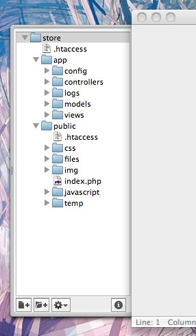
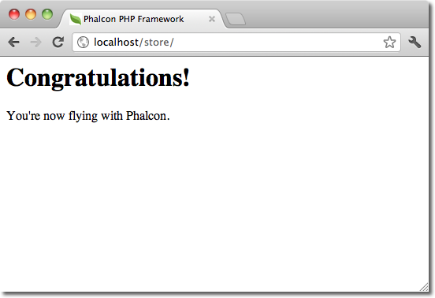
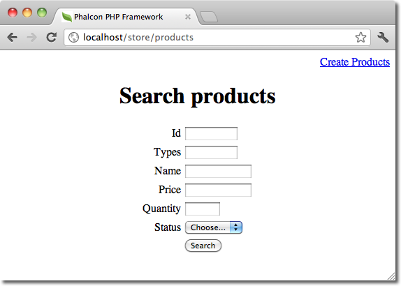
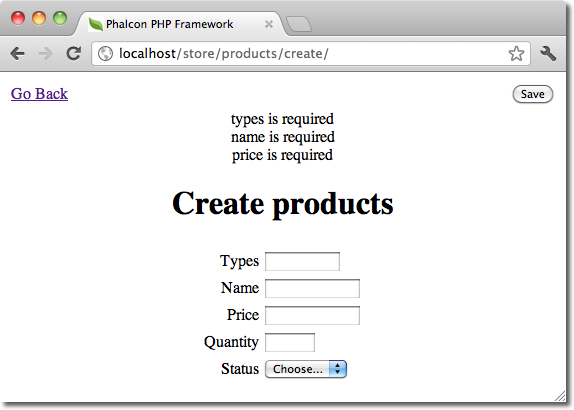
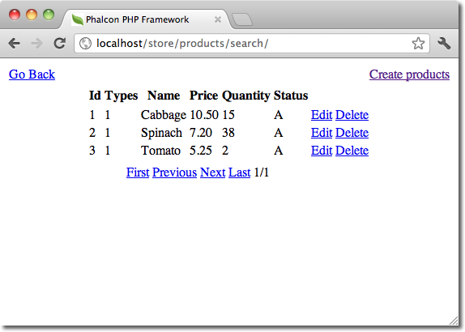

Phalcon Developer ToolsThese tools are a collection of useful scripts to generate skeleton code. Core components of your application can be generated with a simple command, allowing you to easily develop applications using Phalcon.
DownloadYou can download or clone a cross platform package containing the developer tools from Github. InstallationThese are detailed instructions on how to install the developer tools on different platforms: Getting Available CommandsYou can get a list of available commands in Phalcon tools by typing: phalcon commands $ phalcon commands
Phalcon DevTools (1.2.3)
Available commands:
commands (alias of: list, enumerate)
controller (alias of: create-controller)
model (alias of: create-model)
all-models (alias of: create-all-models)
project (alias of: create-project)
scaffold
migration
webtools
Generating a Project SkeletonYou can use Phalcon tools to generate pre-defined project skeletons for your applications with Phalcon framework. By default the project skeleton generator will use mod_rewrite for Apache. Type the following command on your web server document root: $ pwd
/Applications/MAMP/htdocs
$ phalcon create-project store
The above recommended project structure was generated:

You could add the parameter –help to get help on the usage of a certain script:
Phalcon DevTools (1.2.3)
Accessing the project from the web server will show you:

Generating ControllersThe command “create-controller” generates controller skeleton structures. It’s important to invoke this command inside a directory that already has a Phalcon project. $ phalcon create-controller --name test
The following code is generated by the script: <?php
class TestController extends Phalcon\Mvc\Controller
{
public function indexAction()
{
}
}
Preparing Database SettingsWhen a project is generated using developer tools. A configuration file can be found in app/config/config.ini To generate models or scaffold, you will need to change the settings used to connect to your database. Change the database section in your config.ini file: [database]
adapter = Mysql
host = "127.0.0.1"
username = "root"
password = "secret"
dbname = "store_db"
[phalcon]
controllersDir = "../app/controllers/"
modelsDir = "../app/models/"
viewsDir = "../app/views/"
baseUri = "/store/"
Generating ModelsThere are several ways to create models. You can create all models from the default database connection or some selectively. Models can have public attributes for the field representations or setters/getters can be used.
The simplest way to generate a model is: $ phalcon model products
$ phalcon model --name tablename
All table fields are declared public for direct access. <?php
class Products extends \Phalcon\Mvc\Model
{
/**
* @var integer
*/
public $id;
/**
* @var integer
*/
public $types_id;
/**
* @var string
*/
public $name;
/**
* @var string
*/
public $price;
/**
* @var integer
*/
public $quantity;
/**
* @var string
*/
public $status;
}
By adding the –get-set you can generate the fields with protected variables and public setter/getter methods. Those methods can help in business logic implementation within the setter/getter methods. <?php
class Products extends \Phalcon\Mvc\Model
{
/**
* @var integer
*/
protected $id;
/**
* @var integer
*/
protected $types_id;
/**
* @var string
*/
protected $name;
/**
* @var string
*/
protected $price;
/**
* @var integer
*/
protected $quantity;
/**
* @var string
*/
protected $status;
/**
* Method to set the value of field id
* @param integer $id
*/
public function setId($id)
{
$this->id = $id;
}
/**
* Method to set the value of field types_id
* @param integer $types_id
*/
public function setTypesId($types_id)
{
$this->types_id = $types_id;
}
...
/**
* Returns the value of field status
* @return string
*/
public function getStatus()
{
return $this->status;
}
}
A nice feature of the model generator is that it keeps changes made by the developer between code generations. This allows the addition or removal of fields and properties, without worrying about losing changes made to the model itself. The following screencast shows you how it works: Scaffold a CRUDScaffolding is a quick way to generate some of the major pieces of an application. If you want to create the models, views, and controllers for a new resource in a single operation, scaffolding is the tool for the job. Once the code is generated, it will have to be customized to meet your needs. Many developers avoid scaffolding entirely, opting to write all or most of their source code from scratch. The generated code can serve as a guide to better understand of how the framework works or develop prototypes. The screenshot below shows a scaffold based on the table “products”: $ phalcon scaffold --table-name test
The scaffold generator will build several files in your application, along with some folders. Here’s a quick overview of what will be generated:
When browsing the recently generated controller, you will see a search form and a link to create a new Product:

The “create page” allows you to create products applying validations on the Products model. Phalcon will automatically validate not null fields producing warnings if any of them is required.

After performing a search, a pager component is available to show paged results. Use the “Edit” or “Delete” links in front of each result to perform such actions.

Web Interface to ToolsAlso, if you prefer, it’s possible to use Phalcon Developer Tools from a web interface. Check out the following screencast to figure out how it works: Integrating Tools with PhpStorm IDEThe screencast below shows how to integrate developer tools with the PhpStorm IDE. The configuration steps could be easily adapted to other IDEs for PHP. ConclusionPhalcon Developer Tools provides an easy way to generate code for your application, reducing development time and potential coding errors. |
||||||||||||||||||||||||||||||||||||||||||||||||||||||||